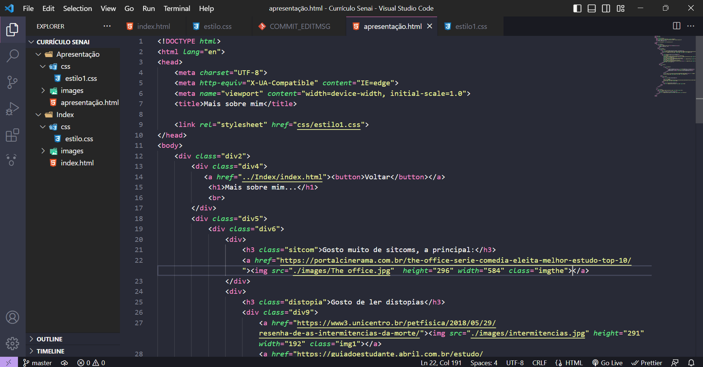
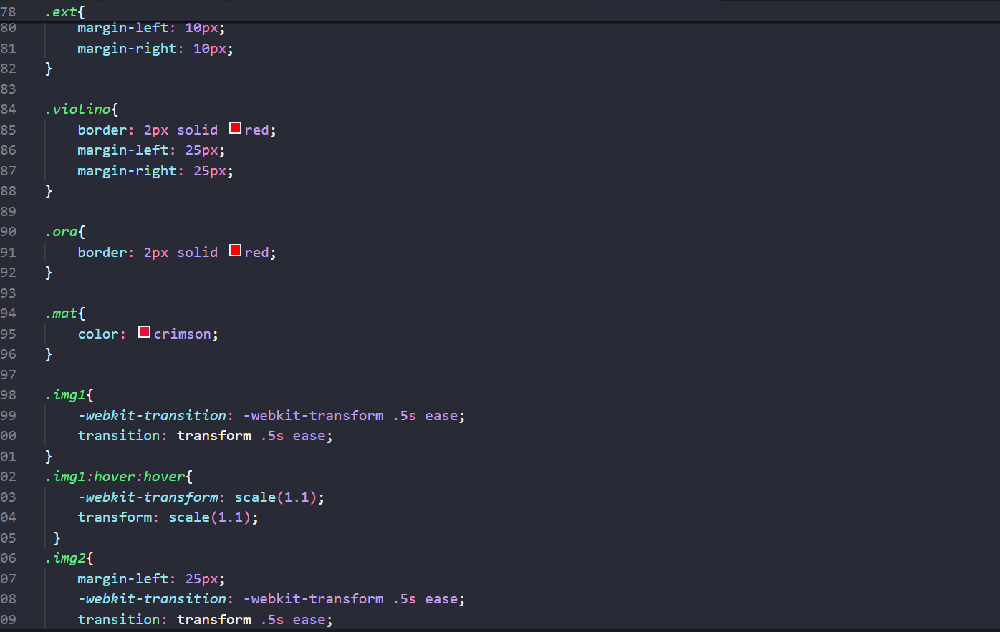
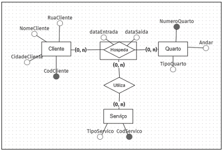
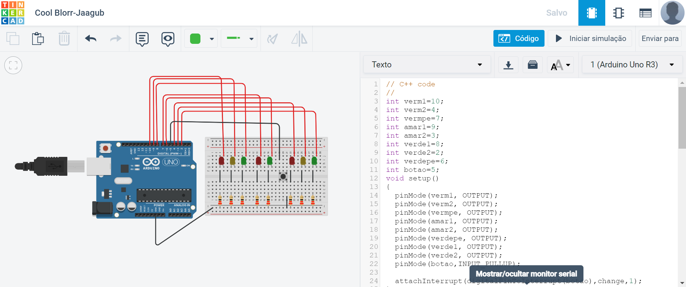
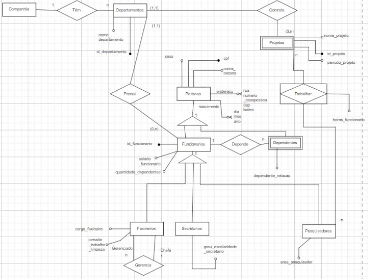

Linguagem de Programação
E o que é Linguagem da Programação?
Um conjunto de regras e símbolos que permitem que um programador instrua um computador para executar tarefas específicas.
O que foi aprendido?
- HTML: Hypertext Markup Language, é a linguagem de marcação padrão usada para criar páginas e aplicativos da web.
- CSS: Cascading Style Sheets, é uma linguagem de estilo usada para descrever a apresentação e o layout de documentos HTML. Ele fornece uma maneira de controlar a aparência das páginas da Web, incluindo cores, fontes, espaçamento e posicionamento de elementos.
- Estrutura de dados: uma forma de organizar e armazenar dados de modo a facilitar a manipulação e o acesso a eles.
- Estrutura de controle: recursos disponíveis em linguagens de programação que permitem controlar o fluxo de execução do programa.
- POO: paradigma de programação que organiza o código em torno de objetos, que são instâncias de classes.
- JavaScript: linguagem de programação de alto nível, interpretada e orientada a objetos, utilizada principalmente para desenvolvimento web. É uma das tecnologias fundamentais da web moderna, permitindo criar interatividade e dinamismo em páginas web.
- Lógica de programação: capacidade de resolver problemas de forma estruturada e sequencial, utilizando conceitos e técnicas que são fundamentais para a programação de computadores. Ela envolve a aplicação de regras e algoritmos para a resolução de problemas, independentemente da linguagem de programação utilizada.
- Aprendizado sobre IDE's: ambiente integrado de desenvolvimento de software que fornece ferramentas e recursos para facilitar o processo de programação. Uma IDE é uma aplicação que combina um editor de código, um compilador ou interpretador, depurador e outras funcionalidades, tudo em um único ambiente de trabalho.
- Aprendemos a utilizar o GitHub(site de versionamento)
- Criamos sites de acordo com aquilo solicitado por um cliente
Veja exemplos sobre os temas:
HTML
CSS
Ciência de dados
- Integral: cálculo da área de um gráfico qualquer.
- Derivada: valor da constante angular da reta tangente.
- Amostragem: processo utilizado em pesquisas e estatística para selecionar uma parte representativa de uma população maior. Em muitos casos, é inviável ou impraticável coletar dados de todos os elementos de uma população, então a amostragem permite estudar apenas uma fração dessa população, conhecida como amostra.
- Amostragem aleatória:um método utilizado na pesquisa e estatística para selecionar uma amostra de indivíduos de uma população de forma imparcial e aleatória.
- Amostragem sistemática: um método de seleção de amostras em que os elementos da população são escolhidos de acordo com um padrão sistemático predefinido. Esse método é usado quando a população-alvo possui uma ordem natural ou sequencial e é desejável obter uma amostra representativa dessa sequência.
- Amostragem estratificada: um método de seleção de amostras em que a população é dividida em subgrupos distintos chamados estratos. Uma amostra é selecionada aleatoriamente dentro de cada estrato, garantindo que cada subgrupo esteja adequadamente representado na amostra final.
- Tendência central: conceito estatístico que busca resumir ou descrever o valor central ou típico de um conjunto de dados.
- Média: calculada somando todos os valores do conjunto de dados e dividindo pelo número total de observações. Ela é sensível a valores extremos (outliers) e é afetada por eles.
- Mediana: o valor que divide os dados ordenados em duas partes iguais, ou seja, metade dos valores está acima da mediana e metade está abaixo.
- Moda: valor ou valores que ocorrem com maior frequência em um conjunto de dados.
- Percentil: medida estatística que indica a posição relativa de um valor em relação a um conjunto de dados. Ele divide os dados ordenados em 100 partes iguais, fornecendo uma referência sobre como um valor específico se compara ao restante do conjunto.
- Quartil: medidas estatísticas que dividem um conjunto de dados ordenados em quatro partes igualmente divididas.
- Medida de dispersão: estatística que descreve a variabilidade ou dispersão dos valores em um con
- Amplitude: a diferença entre o maior e o menor valor em um conjunto de dados. Embora seja fácil de calcular, a amplitude é sensível a valores extremos e pode não ser uma medida robusta de dispersão.
- Variância: uma medida de dispersão que indica a média dos quadrados das diferenças entre cada valor do conjunto de dados e a média. A variância leva em conta todos os valores e fornece uma indicação da variabilidade total dos dados.
- Desvio padrão: raiz quadrada da variância. O desvio padrão é uma medida mais interpretável, pois está na mesma unidade dos dados originais. Ele indica o quanto, em média, os valores desviam da média e é amplamente utilizado devido à sua interpretação intuitiva.
- Qui quadrado: o teste qui-quadrado compara as frequências observadas em cada categoria com as frequências esperadas, caso as variáveis sejam independentes. Quanto maior for a diferença entre as frequências observadas e esperadas, maior será o valor do qui-quadrado e maior a evidência contra a independência das variáveis.
Banco de dados
Banco de dados é um sistema organizado de armazenamento de informações que permite a criação, manipulação e recuperação eficiente de dados. Ele é projetado para armazenar grandes quantidades de informações de forma estruturada, para que possam ser facilmente acessadas, gerenciadas e atualizadas.
- Linguagem SQL, no PostgreSQL: é uma linguagem de programação usada para gerenciar e manipular bancos de dados relacionais. Ela permite a criação, atualização, consulta e exclusão de dados em um banco de dados.
- Documentar tabelas, estruturas e relações do banco
- MER(Modelo Entidade-Relacionamento): é uma técnica para projetar e representar a estrutura de um banco de dados relacional. O modelo MER é utilizado para descrever as entidades (objetos ou conceitos) envolvidos em um sistema, bem como os relacionamentos entre essas entidades.
- DER (Diagrama Entidade-Relacionamento): uma representação gráfica do modelo de dados na modelagem de banco de dados. 
- SGBD: um software projetado para gerenciar o armazenamento, organização, acesso e manipulação de dados em um banco de dados. Ele fornece uma interface para interagir com o banco de dados e oferece recursos para criar, modificar, consultar e administrar os dados armazenados.
- Comandos:
- DDL: Data Definition Language
- Comandos DML: Data Manipulation Language
- Comandos DQL: Data Query Language
- Comandos DTL: Data Trasaction Language
- Comandos DCL: Data Control Language
- Modelos:
- Conceitual: a representação mais abstrata do banco de dados e descreve as entidades, os relacionamentos e as restrições de forma independente de qualquer sistema de gerenciamento de banco de dados específico.
- Lógico: uma representação intermediária que descreve como os dados são organizados e relacionados no banco de dados, mas não se preocupa com os detalhes específicos de implementação. Ele é projetado para ser independente do sistema de gerenciamento de banco de dados (SGBD) e é mais detalhado do que o modelo conceitual.
- Físico: representação mais detalhada do banco de dados e está diretamente relacionado à implementação física do banco de dados em um sistema de gerenciamento de banco de dados específico.
Automação industrial
- Robótica: Aprendemos a definição de robô,as leis de Isaac Asimov, tipos de robô e programação básica.
- Sensores: dispositivos eletrônicos ou mecânicos projetados para detectar e medir alterações em seu ambiente físico e converter essas informações em um sinal mensurável ou legível para serem processadas ou utilizadas por outros sistemas.
- Instruções de bit: operações que manipulam ou alteram bits individuais em uma representação binária de dados. Elas são amplamente utilizadas em programação de baixo nível, processamento de dados e manipulação de hardware.
- Conversão de dados: processo de alterar a representação de um dado de um formato para outro.
- Tinkercad: plataforma online de design e simulação 3D, desenvolvida pela Autodesk. Ela foi projetada para permitir que estudantes, entusiastas e profissionais criem e compartilhem projetos de design, eletrônica e impressão 3D.
Redes e Computadores
- Topologias de rede: referem-se à forma como os dispositivos de uma rede de computadores estão fisicamente conectados entre si.
- Topologia em Estrela: , todos os dispositivos da rede são conectados a um ponto central, como um switch ou concentrador. Cada dispositivo tem uma conexão direta com o ponto central, e as comunicações entre os dispositivos passam por esse ponto central.
- Topologia em Anel: os dispositivos são conectados em uma estrutura de anel, onde cada dispositivo está conectado a dois dispositivos vizinhos, formando um circuito fechado.
- Topologia em Barramento: todos os dispositivos são conectados a um único cabo compartilhado, chamado de barramento. Os dispositivos se comunicam enviando sinais pela linha do barramento, e todos os dispositivos recebem esses sinais.
- Topologia em Malha: cada dispositivo é conectado a todos os outros dispositivos da rede, formando um padrão de conexões redundantes. Isso permite várias rotas para a transmissão de dados, o que aumenta a confiabilidade e a disponibilidade da rede.
- Modelo OSI: modelo conceitual que descreve uma arquitetura de rede em camadas. Foi desenvolvido pela International Organization for Standardization (ISO) como um padrão para garantir a interoperabilidade entre diferentes sistemas de comunicação de rede.
- Modelo TCP/IP: um conjunto de protocolos de rede que define a forma como os dispositivos se comunicam e trocam informações em redes de computadores. Ele é o modelo mais amplamente utilizado em redes de dados e é a base da Internet.
- Routers: dispositivos de rede que desempenham um papel fundamental na comunicação de dados em redes de computadores.
Funções:- Encaminhamento de pacotes,
- Divisão de redes,
- Conexão de redes,
- Tradução de endereços de rede,
- Segurança de rede.
- "Access Points": são dispositivos de rede sem fio que permitem a conexão de dispositivos móveis, como laptops, smartphones e tablets, a uma rede local (LAN) ou à internet. Eles atuam como pontes entre a rede com fio e a rede sem fio, permitindo que os dispositivos sem fio se conectem e comuniquem por meio de tecnologias como Wi-Fi.
- "Firewalls": dispositivos ou programas de software que atuam como uma barreira de segurança entre redes, controlando o tráfego de rede com base em regras pré-definidas. O objetivo principal de um firewall é proteger uma rede contra ameaças externas, como acesso não autorizado, malware e ataques cibernéticos.
- Cabos Ethernet: cabos de rede utilizados para estabelecer conexões com fio em redes locais (LANs).
- Cabos Coaxiais: tipo de cabo de transmissão de sinal que consiste em um condutor interno, um isolante dielétrico, uma blindagem metálica e uma cobertura externa.
- Conectores RJ-45: conectores padrão utilizados para conectar cabos Ethernet de rede. Eles são amplamente usados em redes locais (LANs) para estabelecer conexões com fio entre dispositivos de rede, como computadores, roteadores, switches, impressoras e outros dispositivos de rede.
- Placas de rede: também conhecidas como placas de interface de rede (NIC - Network Interface Card), são dispositivos de hardware usados para conectar computadores e outros dispositivos a uma rede. Elas são responsáveis por enviar e receber dados através da rede, permitindo que os dispositivos se comuniquem uns com os outros.
- Protocolo TCP/IP: um conjunto de protocolos de comunicação que define as regras para a transmissão e recepção de dados em redes de computadores. Ele é a base da Internet e é amplamente utilizado em redes locais (LANs) e redes de longa distância (WANs).
- Servidores: computadores ou sistemas de hardware dedicados a fornecer serviços, recursos e funcionalidades específicas para outros dispositivos e usuários em uma rede. Eles desempenham um papel crucial no armazenamento, processamento e compartilhamento de informações e recursos em uma infraestrutura de rede.
- Redes locais: uma rede de computadores que abrange uma área geográfica limitada, como um escritório, um prédio ou um campus universitário.
- VLAN: uma técnica de rede que permite a criação de redes virtuais lógicas dentro de uma rede física. Com as VLANs, é possível segmentar uma rede física em várias redes virtuais independentes, mesmo que os dispositivos estejam conectados ao mesmo switch físico.
- MAN: é uma rede de computadores que abrange uma área geográfica maior do que uma LAN, geralmente uma cidade ou uma área metropolitana. Ela conecta várias LANs e pode abranger vários edifícios ou campus dentro de uma cidade.
- WAN: rede de computadores que abrange uma área geográfica ampla, como um país, continente ou até mesmo o mundo inteiro. Ela interconecta redes locais (LANs e MANs) em diferentes locais geográficos através de tecnologias como linhas alugadas, circuitos virtuais, redes privadas virtuais (VPNs) e a Internet.
- CGI.br(Comitê Gestor da Internet no Brasil): um órgão responsável pela coordenação e governança da Internet no Brasil. Foi criado em 1995 com o objetivo de estabelecer diretrizes estratégicas relacionadas ao uso, desenvolvimento e governança da Internet no país.:
- NIC.br(Núcleo de Informação e Coordenação do Ponto BR): uma entidade brasileira responsável pela coordenação e administração do registro de domínios sob o código de país ".br" e pela promoção do desenvolvimento da Internet no Brasil. Ele atua como um braço operacional do CGI.br (Comitê Gestor da Internet no Brasil) e desempenha várias funções relacionadas à governança da Internet no país.
- NAT (Network Address Translation): técnica utilizada em redes de computadores para traduzir endereços IP de um domínio para outro, permitindo a comunicação entre redes com diferentes esquemas de endereçamento IP.
- DHCP (Dynamic Host Configuration Protocol): protocolo de rede que permite a atribuição dinâmica de configurações de rede para dispositivos em uma rede IP. Ele simplifica a configuração e gerenciamento de endereços IP, máscaras de sub-rede, gateways padrão, servidores DNS e outros parâmetros de rede.
- Endereços IPV6: são a próxima geração de endereços IP utilizados na Internet. Eles foram introduzidos para substituir gradualmente os endereços IPv4, que estão se esgotando devido ao crescimento contínuo da Internet. Os endereços IPv6 são representados por 128 bits, em comparação aos 32 bits dos endereços IPv4.
- Endereços IPV4: são a versão atualmente mais comum de endereços IP utilizados na Internet. Eles são compostos por 32 bits e são representados por quatro grupos de números decimais separados por pontos. Cada grupo de números decimais representa 8 bits. Um exemplo de endereço IPv4 é: 192.168.0.1
- Governança (ICANN - Internet Corporation for Assigned Names and Numbers): uma organização global sem fins lucrativos responsável pela coordenação dos identificadores exclusivos da Internet. Ela desempenha um papel fundamental na governança da Internet, garantindo a estabilidade e segurança do sistema de nomes de domínio (DNS) e da atribuição de endereços IP.
- TLD(Top-Level Domain): a parte mais alta da hierarquia do sistema de nomes de domínio (DNS). É a última parte de um nome de domínio, localizada após o último ponto. Os TLDs são usados para identificar a natureza ou a finalidade de um domínio específico na Internet.
- TCP: protocolo orientado à conexão, o que significa que antes de enviar dados, é estabelecida uma conexão entre o remetente e o destinatário.
- UDP: protocolo não orientado à conexão, o que significa que não é estabelecida uma conexão prévia antes de enviar os dados.
- HTTP(Hypertext Transfer Protocol): um protocolo de comunicação utilizado para transferir informações pela World Wide Web (WWW). É a base para a comunicação entre um cliente (geralmente um navegador da web) e um servidor web.
- Normas e regras pertinentes a comunicação e conectividade
Projetos
Cruzamento
O projeto acima visa simular dois semáforos de carros e um de pedestre. As condições de funcionamento:
- Se um semáforo estiver aberto, nenhum dos outros pode estar aberto;
- Ao apertar para atravessar, o semáforo do pedestre deve esperar que o semáforo de carros aberto seja fechado e entãoabra passagem para o pedestre que aguarda.
O projeto/protótipo foi feito em C++ e foram utilizados conceitos de automação e eletrônica.
Banco de dados de uma companhia
O projeto tratava-se de criar um Banco Relacional no Postgree para uma Companhia, organizada por departamentos. Cada departamento é responsável por vários projetos e cada projeto está emum único departamento.
Existem três tipos de funcionários: pesquisadores, secretários e funcionários.
Antes de fazermos o BD propriamento dito fizemos o DER e o MER
DER:
Após isso, utilizamos comandos DDL, DML, DQL, QTL e DCL.
Rede Zimbábue e Cazaquistão
A rede foi feita para mostrar como funcionam a conexão entre LAN's no mundo. Foram usados routers para poder fazer a conexão entre switches. Aprendemos a endereçar e a utilizar as máscaras de sub-rede, gateway padrão e outros parâmetros para que fosse possível fazer a comunicação.

Currículo
O projeto do currículo foi feito logo nas primeiras semana de aula. Ele nos fez utilizar os conceitos de HTML semântico, as diversas tags HTML e estilização em CSS. Ele foi de suma importância para compreendermos a criação de páginas web.

Folha de pagamento
Fizemos um site a fim de facilitar a vida do trabalhador, na qual ele inseria se salário e tinha os valores de desconto do INSS, IRRRF, vale-transporte e por fim do salário líquido.

Rede com ISP's
Ao avançarmos na matéria de redes, acrescentamos ISP's, simulando então uma WAN. Assim, conectamos internet's locais a internet global. Conhecemos então as diversas etapas para se ter ISP's.
Site estilizador
O seguinte site destina-se a estilizar os execícios que o professor Cainã havia nos passado, acerca de JavaScript.